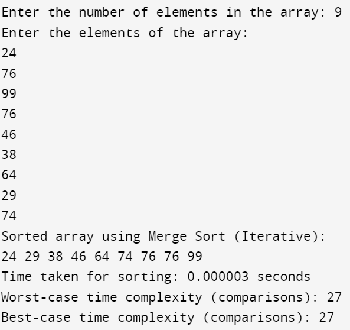

#include<stdio.h>
#include<time.h>
#include<stdlib.h>
void merge(int arr[], int left, int mid, int right) {
int n1 = mid - left + 1;
int n2 = right - mid;
int leftArray[n1], rightArray[n2];
for (int i = 0; i < n1; i++) {
leftArray[i] = arr[left + i];
}
for (int i = 0; i < n2; i++) {
rightArray[i] = arr[mid + 1 + i];
}
int i = 0, j = 0, k = left;
while (i < n1 && j < n2) {
if (leftArray[i] <= rightArray[j]) {
arr[k] = leftArray[i];
i++;
} else {
arr[k] = rightArray[j];
j++;
}
k++;
}
while (i < n1) {
arr[k] = leftArray[i];
i++;
k++;
}
while (j < n2) {
arr[k] = rightArray[j];
j++;
k++;
}
}
void mergeSortIterative(int arr[], int n) {
int currentSize, leftStart;
for (currentSize = 1; currentSize <= n - 1; currentSize *= 2) {
for (leftStart = 0; leftStart < n - 1; leftStart += 2 * currentSize) {
int mid = leftStart + currentSize - 1;
int rightEnd = (leftStart + 2 * currentSize - 1 < n - 1) ? leftStart + 2 * currentSize - 1 : n - 1;
merge(arr, leftStart, mid, rightEnd);
}
}
}
int main() {
int n;
printf("Enter the number of elements in the array: ");
scanf("%d", &n);
int arr[n];
printf("Enter the elements of the array:\n");
for (int i = 0; i < n; i++) {
scanf("%d", &arr[i]);
}
clock_t start_time, end_time;
start_time = clock();
mergeSortIterative(arr, n);
end_time = clock();
printf("Sorted array using Merge Sort (Iterative):\n");
for (int i = 0; i < n; i++) {
printf("%d ", arr[i]);
}
double execution_time = (double)(end_time - start_time) / CLOCKS_PER_SEC;
printf("\nTime taken for sorting: %f seconds\n", execution_time);
// Worst-case time complexity O(n * log(n))
int worst_case_comparisons = n * (int)(log2(n));
printf("Worst-case time complexity (comparisons): %d\n", worst_case_comparisons);
// Best-case time complexity O(n * log(n))
int best_case_comparisons = n * (int)(log2(n));
printf("Best-case time complexity (comparisons): %d\n", best_case_comparisons);
return 0;
}
Output:
